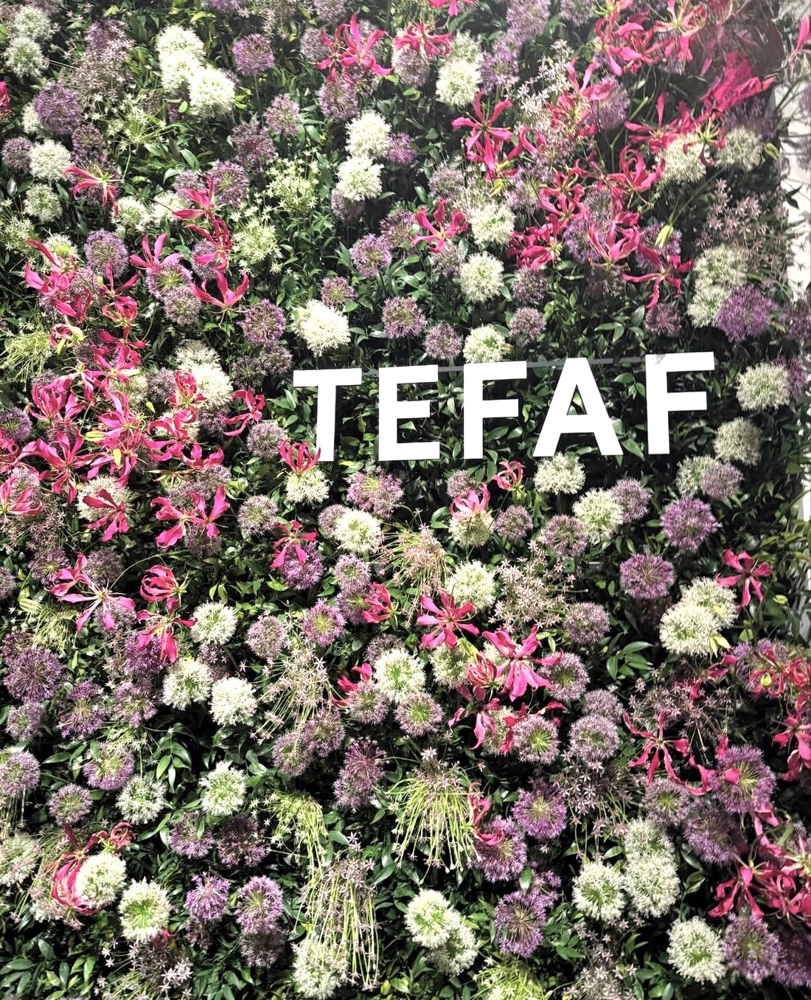
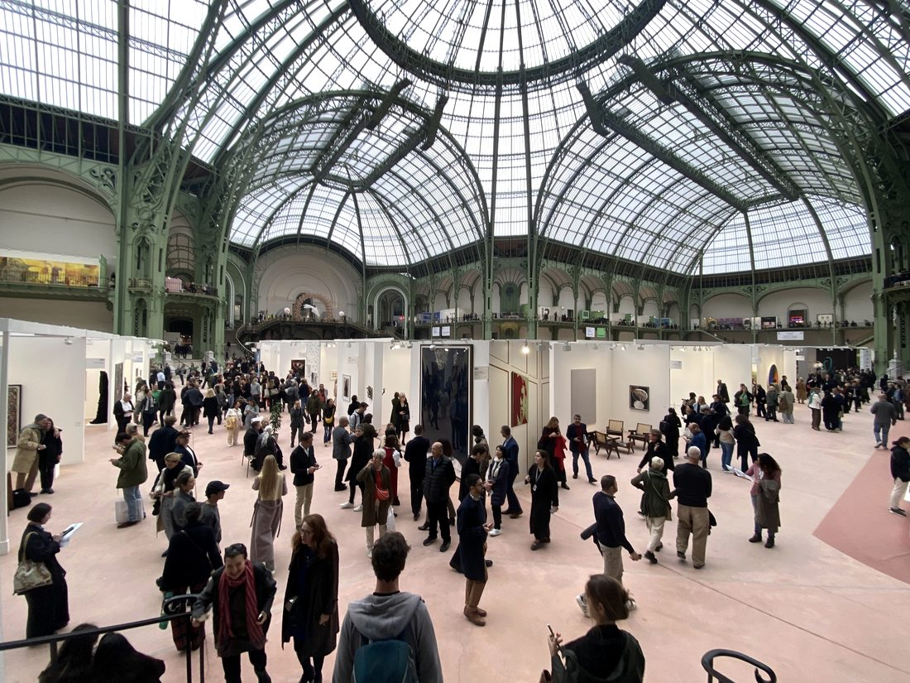
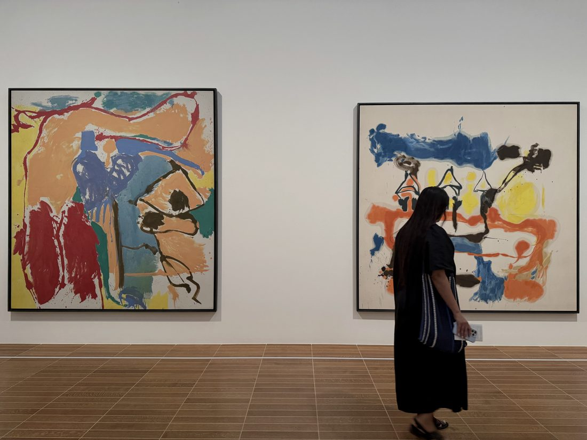
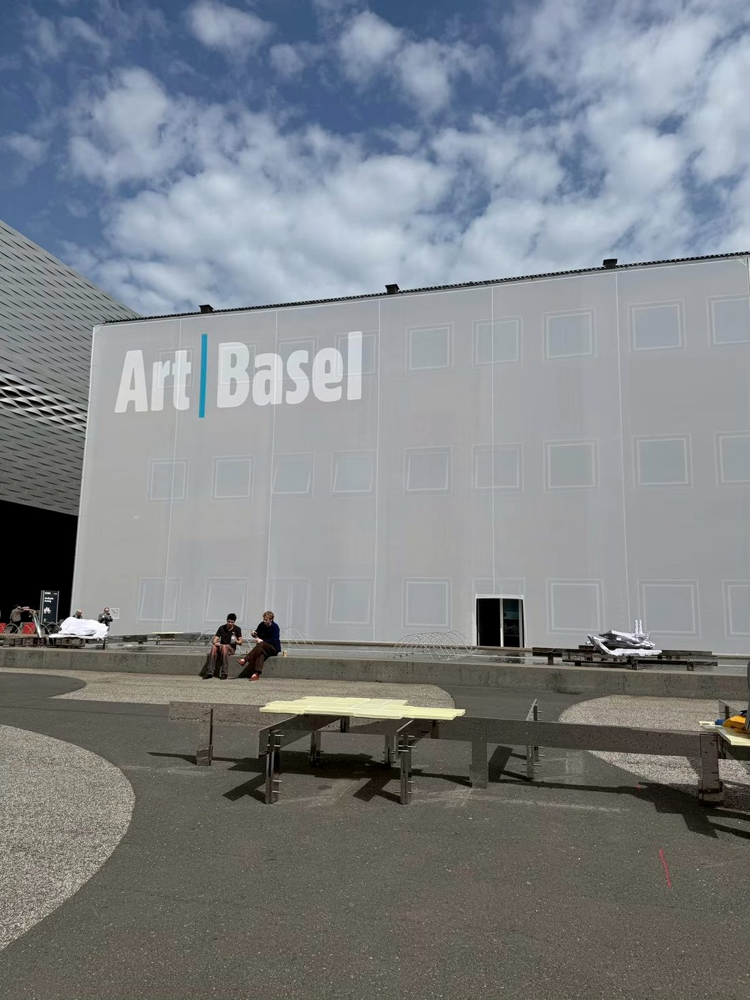
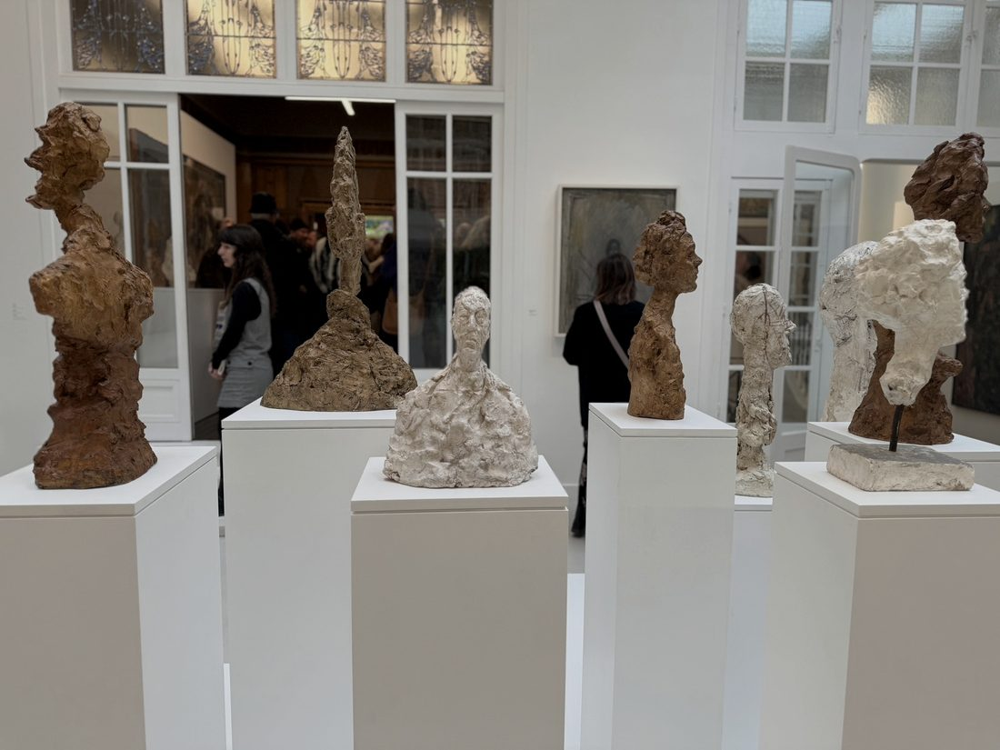

作品との出逢いから、購入、収蔵、そして次世代への継承まで。 From the first encounter, through acquisition and care, to the next generation.
READ MORE READ MORE美術品を購入するという行為は、人生に新しい楽しみを加えることであり、これからの時間、さらにはその先の永い時間を共にする相手を選ぶことでもあります。 To acquire a work of art is to add a new pleasure to one's life — and, at the same time, to choose a companion for the years ahead, and for the long years beyond them.
アートは、住空間を埋める単なる装飾物ではありません。 Art is not mere decoration to fill a living space.
作品と向き合うことは、その背景にある時代性や文化、発想の源となった思想や哲学と交信すること。そこから生まれる新たな視点や感性は、日々の暮らしをより創造的で豊かなものへと導いてくれます。 To face a work is to be in conversation with the era and culture behind it, and with the thought and philosophy from which it sprang. The new perspectives and sensibilities born of that exchange lead daily life toward something more creative and more abundant.
そうした時間を重ねていくこともまた、美術品を所有する価値のひとつだと、私たちは考えています。 The accumulation of such time is, we believe, one of the true values of owning art.
— CoaLab ART ADVISORY — CoaLab ART ADVISORY
国内外のアートフェアや展覧会を訪れ、
作品とその背景に触れることは
私たちアドバイザリーの原点です。
そこで出会った作品やアートの「いま」をご紹介します。
Visiting art fairs and exhibitions at home and abroad —
encountering works and their stories is where our advisory begins.
Here we share the works we have met, and the "now" of art.




